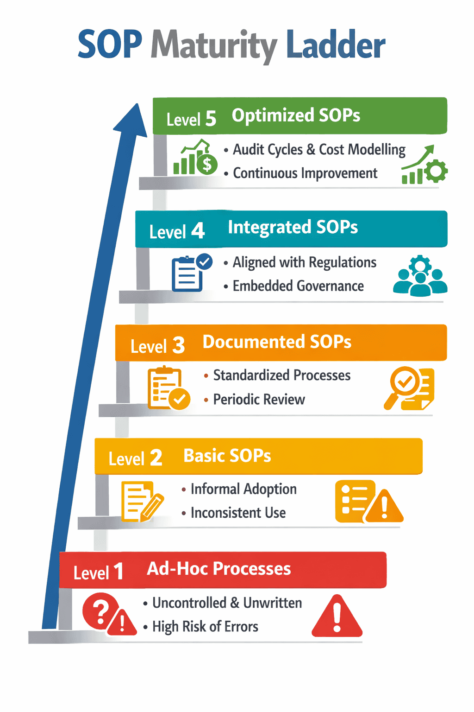

SOPs Handbook¶
Governance and Service Design for Nonprofits & IT Services¶
Tutorial – Creating SOPs¶
This tutorial provides step‑by‑step guidance for drafting and documenting SOPs in nonprofit and IT service contexts.
It aligns with ISO 9001 standards and donor governance requirements to ensure consistency, compliance, and accountability.
Step 1 – Identify stakeholders¶
Identify process owners and stakeholders responsible for the activity.
Clear ownership ensures accountability and smooth implementation.
Step 2 – Map the workflow¶
Define the workflow and break it into clause‑tagged steps.
This makes tasks reproducible and easy to audit.
Step 3 – Align with standards¶
Document processes in line with ISO 9001 for consistency and audit readiness.
This ensures SOPs meet international quality benchmarks.
Step 4 – Incorporate external policies¶
Integrate regulator or donor requirements into SOPs.
Tailor them to project realities while maintaining compliance.
Step 5 – Validate through pilot runs¶
Test SOPs with operations teams to capture practical feedback.
Adjust based on lessons learned before formal approval.
Step 6 – Obtain approvals¶
Secure approvals from governance committees or sponsor representatives.
This step ensures legitimacy and sponsor confidence.
How‑to – Reviewing & Updating SOPs¶
SOPs must be reviewed and updated regularly to remain relevant, compliant, and effective.
This guide provides a practical checklist for nonprofit and IT service teams to keep SOPs aligned with governance and donor requirements.
Step 1 – Periodic Review¶
Schedule annual or bi‑annual reviews.
Ensure SOPs align with current governance policies and donor expectations.
Step 2 – Version Control¶
Maintain revision history with version numbers and dates.
Supports audit readiness and transparency.
Step 3 – Update Triggers¶
Revise SOPs when:
- Regulations change
- Donor requirements evolve
- Project workflows are modified
Step 4 – Engage Stakeholders¶
Include process owners and operations teams.
Capture feedback to improve usability and adoption.
Step 5 – Pilot Testing¶
Validate updates through pilot runs.
Ensure changes are workable in real‑world conditions.
Step 6 – Approvals¶
Obtain approvals from governance committees or sponsors.
Formal sign‑off demonstrates accountability.
Step 7 – Communication¶
Communicate revisions clearly to staff and stakeholders.
Provide training or briefing sessions for consistent adoption.
Reference – Economics & Budgeting of SOPs¶
Standard Operating Procedures (SOPs) require resources for drafting, training, implementation, and audits.
Budgeting ensures SOP activities are sustainable and aligned with project funding cycles.
This reference outlines the key cost areas, integration with donor requirements, and cost modeling practices.
Key Cost Areas¶
| Cost Component | Description | Governance Impact |
|---|---|---|
| Staff Time | Drafting SOPs, conducting training, and implementation support. | Ensures operational continuity and accountability. |
| Documentation Tools | Systems for writing, storing, and versioning SOPs. | Strengthens transparency and audit readiness. |
| Training Sessions | Onboarding staff to new or updated SOPs. | Builds compliance culture and reproducibility. |
| Compliance Audits | Periodic checks for adherence to governance and donor requirements. | Reinforces trust and sponsor confidence. |
Donor and Regulator Integration¶
SOPs can integrate donor or regulator requirements directly into budget planning.
This ensures transparency and alignment with external reporting expectations.
Budget allocations should reflect compliance costs and sponsor optics.
Cost Modeling¶
- Highlight per‑employee or per‑activity expenses to demonstrate efficiency.
- Use clear models showing how SOP costs fit into overall project budgets.
- Document assumptions and calculations for audit readiness.
Accountability¶
Clear budgeting demonstrates accountability and strengthens donor confidence.
It shows that SOPs are not just operational tools but part of sustainable governance.
Explanation – SOP Maturity Index¶
The SOP Maturity Index describes the stages of adoption and optimisation of Standard Operating Procedures.
It helps organisations assess their current state, identify gaps, and plan improvements.
This framework is particularly useful for nonprofits and IT service teams seeking donor confidence, compliance, and operational clarity.

| Level | Description | Key Risks / Benefits |
|---|---|---|
| 1 – Ad‑hoc, Undocumented | Processes are informal and undocumented; tasks vary by performer. | High inconsistency, non‑compliance risk. |
| 2 – Basic SOPs, Informal Adoption | SOPs exist but are not consistently followed; accountability is limited. | Partial risk reduction, weak reproducibility. |
| 3 – Documented SOPs, Periodic Review | SOPs documented and reviewed periodically; teams begin standardisation. | Compliance improves, but external integration limited. |
| 4 – Integrated SOPs with External Policies | SOPs aligned with donor/regulator requirements; governance embedded in operations. | Transparency strengthened, reproducibility improved. |
| 5 – Optimised SOPs with Audit Cycles & Cost Modelling | SOPs fully optimised, embedded in audits, linked to budgeting models. | Continuous improvement culture, donor confidence maximised. |
Why the Maturity Index Matters¶
- Provides a roadmap for organisations to strengthen governance.
- Helps nonprofits demonstrate accountability to donors.
- Supports IT service teams in aligning with ISO and ITIL practices.
- Encourages continuous improvement and sustainable programme delivery.
How‑to – Auditing SOPs¶
Auditing SOPs ensures compliance with governance policies and external stakeholder requirements.
It strengthens accountability, transparency, and donor confidence.
Step 1 – Verify Compliance¶
Check adherence to internal governance rules and external standards.
Ensure SOPs align with ISO guidelines and organizational policies.
Step 2 – Align Donor Reporting¶
Establish audit cycles (quarterly, annual) aligned with donor reporting timelines.
Synchronize with ISO and sponsor expectations.
Step 3 – Diagnostics¶
Use diagnostic checklists to assess reproducibility, clarity, and operational consistency.
Identify weak points in documentation or execution.
Step 4 – Identify & Recommend¶
Highlight gaps, risks, or deviations.
Recommend corrective actions to strengthen governance and service delivery.
Step 5 – Transparency¶
Document audit findings with version control.
Maintain transparency for sponsors, committees, and stakeholders.
Step 6 – Audit Results¶
Share results with governance committees, donors, and operations teams.
Reinforce accountability and build donor confidence.